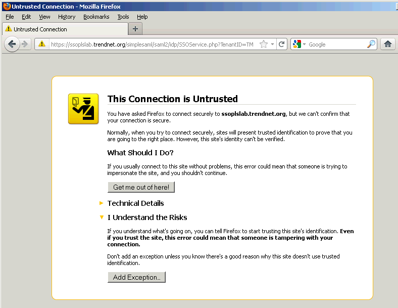
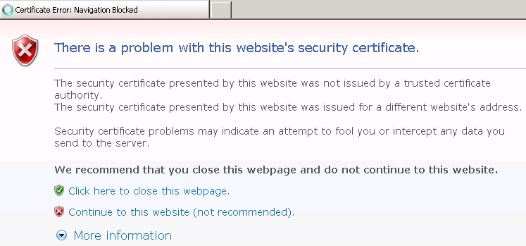
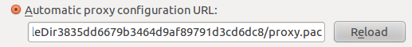

|
|
搭配 interactive mode 測試 HTTPS 的問題，有機會觀察 certificate 的細節，可以節省不少時間。 |
Certificate 有問題時，Firefox 跟 IE 都會擋下來，但行為不太一樣。Firefox 會顯示 Untrusted Connection 的畫面，並提供 Add Exception… 的功能。

IE 6 的反應跟 IE 8 又不太一樣，IE 6 會跳 Security Alert，但 IE 8 則會跳… 只要直接點連結就可以了。當然最根本的解決方法是安裝 certificate。

Chrome 測 HTTPS 會有問題，加上 -trustAllSSLCertificates 可以解決。但加了這個參數之後，反倒是 Firefox 會遇到 SSL Error，發現是卡在不信任 CyberVillians 的關係，一樣要把它加到 Firefox 成為 Certificate Authorities 的一員即可（因為 Firefox 不像 Chrome 會吃 IE 的設定）。
$ java -jar selenium-server-standalone-<version>.jar -help
...
-trustAllSSLCertificates: Forces the Selenium proxy to trust all
SSL certificates. This doesn't work in browsers that don't use the
Selenium proxy.不過就像官方文件所說的，Firefox 被叫起來後會被設定 proxy（不知道為什麼 Chrome/IE 都沒有這個現象？），如果本來就手動設定有 proxy，不知道會發生什麼事？

proxy.pacfunction FindProxyForURL(url, host) {
return 'PROXY localhost:4444; DIRECT';
}還是得深入瞭解 Selenium RC Server 背後的架構，否則 HTTPS 的問題真的很煩人… proxy injection …